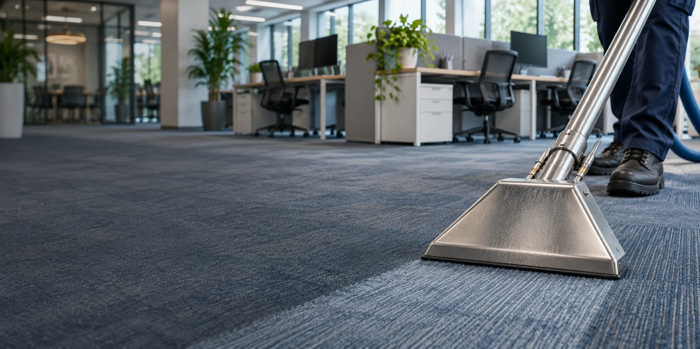
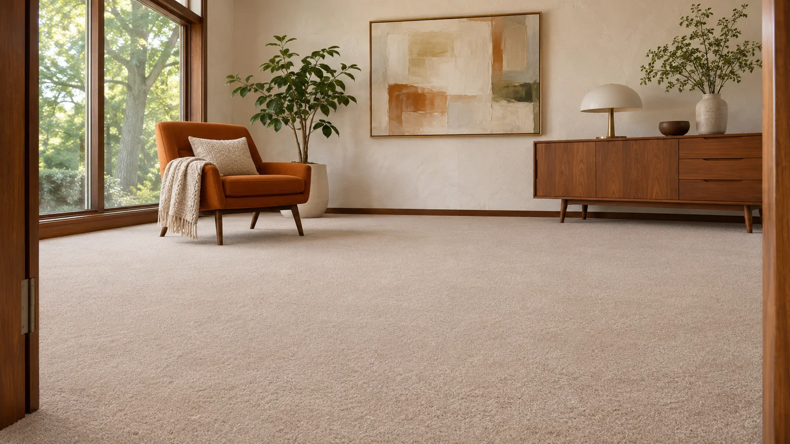
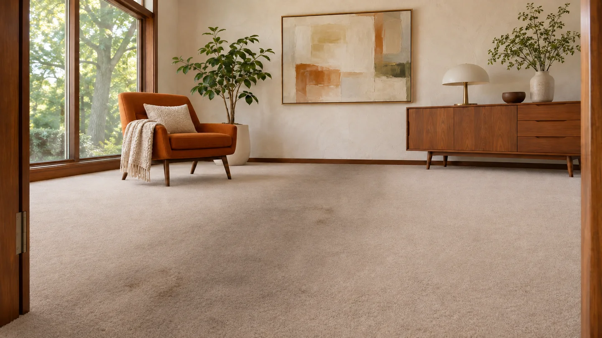

North York & the GTA
A deeperclean.Professional carpet, rug and upholstery cleaning in North York and the GTA.
Before & after
See the difference.
Drag the handle to compare the carpet.


BeforeAfter- 5.0 Read 105 Google reviews
- 1,500+ Homes cleaned
- 5+ years Serving North York & the GTA
- $2M Liability insurance
Business figures reported by PureClean. Google rating checked November 26, 2026.
What to expect when you book.
-
Same-day booking
Call before 2 p.m. and we can usually clean the same afternoon.
-
Safe for pets & kids
We use plant-based, biodegradable solutions formulated to clean without harsh chemical residue.
-
$2M insured & WSIB
PureClean is licensed and carries $2M in liability insurance and WSIB coverage.
-
Free re-clean guarantee
If a spot needs another pass, we’ll come back and re-clean it at no charge.
-
Dry in 4–6 hours
Most carpets dry within 4–6 hours after cleaning.
Cleaning services
What we clean.
Your visit
From quote to clean.
-
Tell us about the job
Share the rooms, furniture or rugs you have in mind. We’ll agree on a price before work starts.
-
Walk us through the space
Your technician checks the fibres and spots with you, then selects the treatment and extraction method.
-
Check the finish together
We’ll point out drying times and aftercare. Most carpets dry in about four to six hours.

“My sofa looks brand new.”M. Raza · Brampton
Before you book
Good to know.
How long before I can walk on the carpet?
Light foot traffic is usually possible after about two hours. Allow roughly four to six hours for the carpet to dry. Your technician can advise on the rooms cleaned that day.
Can I book a same-day visit?
Call early to check the schedule. Calling before 2 pm gives the team a better chance of fitting you in that afternoon. Appointments depend on availability.
What products do you use?
We select plant-based, biodegradable products for homes with children and pets. If someone has a product sensitivity, let us know before the visit so we can discuss the treatment.
What if a spot still needs attention?
Contact us if the result needs another look. We will return to re-clean the affected area at no charge. If you are still dissatisfied afterward, we offer a refund.
Can I change or cancel my appointment?
Give us at least 24 hours’ notice to cancel or reschedule without a fee. A trip fee may apply to a same-day cancellation.
When do I pay?
Pay once the cleaning is complete. We accept cash, e-transfer, debit and major credit cards. No booking deposit is required.